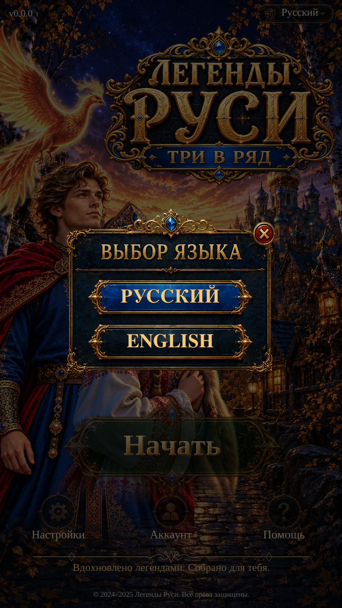

Visual Page 29 · Language Selection
Native RU/EN selection over the approved Splash. Selection is saved on this device; Close and Back return to the originating page.
Implementation and checks · Approved asset reuse · Test results

Actual Unity Play Mode · 941×1672 · Russian · isolated test save.Preference persistence passed across two fresh Unity processes. Existing Splash resources are unchanged. No new Scenario calls or credits.
Live lettering remains approximate. Latest results: 19 targeted Unity checks pass. A broad-run one-pixel Splash equality failure passed on isolated rerun; both results are retained. No APK or physical-phone verification.